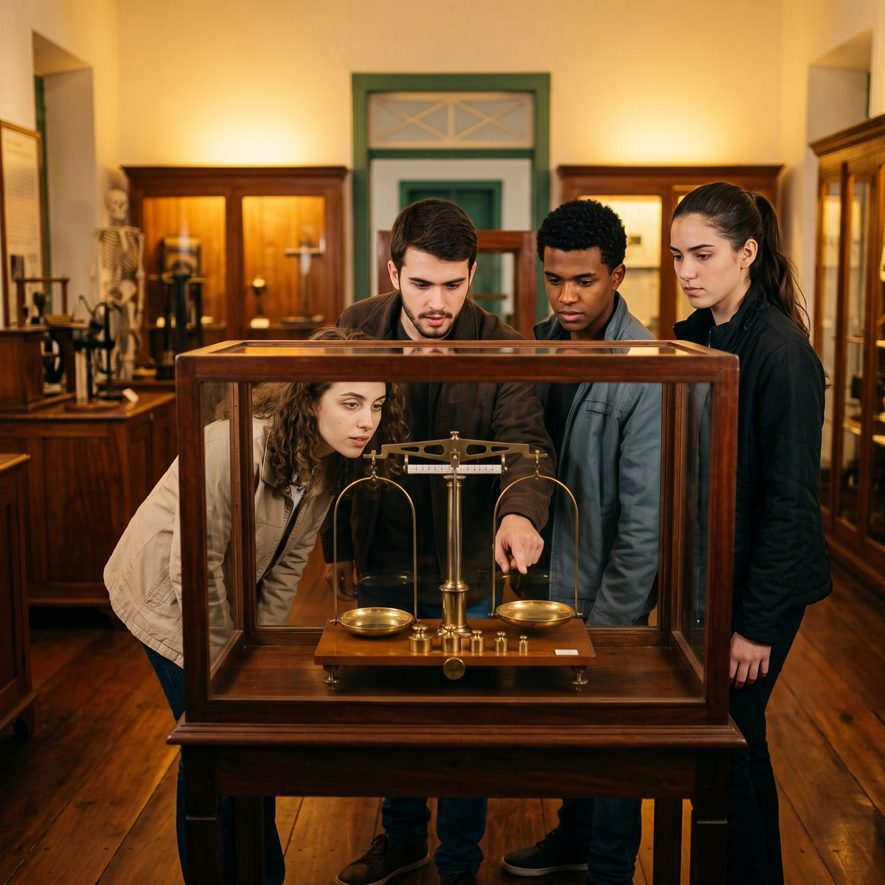
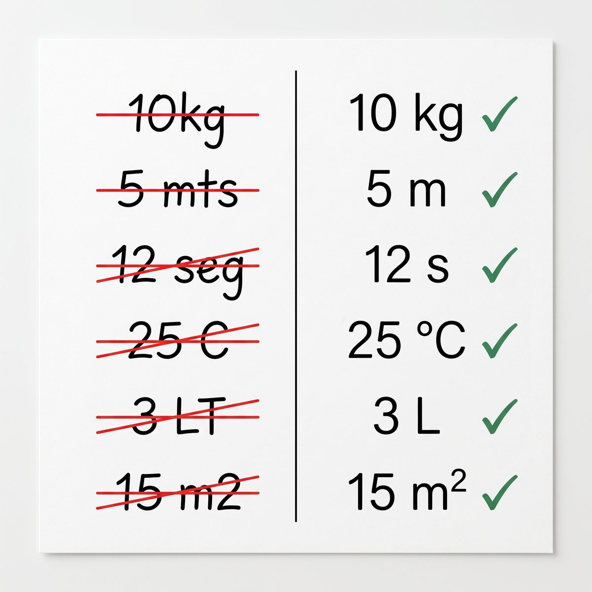

O homem suspenso entre dois infinitos: pequeno demais para o todo, vasto demais para o nada.
Antes de ler o próximo parágrafo, responda de cabeça: quanto pesa a terra retirada de uma cava de minério de ferro do Quadrilátero Ferrífero? Não precisa acertar o número. Basta dizer se é mais perto de mil toneladas, de um milhão ou de um bilhão.
Se você hesitou, está em boa companhia. A maior parte das pessoas não tem régua para essa pergunta: mil, um milhão e um bilhão soam todos como “muito”. Mas entre o primeiro e o último há seis potências de dez — a mesma distância que separa um grão de areia de uma quadra de futebol. Errar por seis ordens não é errar o número; é errar o mundo em que a pergunta está.
Na T0A você ouviu que, no Laboratório de Mecânica (LME), a previsão vem antes do dado. Esta noite você faz a primeira — com o modelo mais simples que existe: a ordem de grandeza. Antes de encostar em qualquer instrumento, você vai escrever “espero algo da ordem de 10n, porque…”. Depois vai medir. E o dado vai dizer se a sua estimativa aguentou. Se não aguentar, você escreve qual hipótese falhou. É o gesto de todo o semestre, em miniatura e ainda sem Mecânica: o experimento já é objeto, e o que vai à prova é o seu raciocínio.
O Sistema Internacional de Unidades (SI) você já conhece da Introdução ao Laboratório (ILB): as sete unidades de base, os prefixos, a grafia. Aqui ele volta como ferramenta. Um prefixo é uma ordem de grandeza com nome, e é assim que ele vai ser usado.
Este texto tem cinco tópicos. O primeiro é a bancada — porque o que você faz com as mãos organiza o resto. Depois vêm as potências de dez, a estimativa como modelo, o SI revisto como régua de escala e, por fim, a volta à pergunta do primeiro parágrafo: do grão à cava.
Mina de Timbopeba — distrito de Antônio Pereira, Ouro Preto
Abra a vista de satélite e afaste o zoom devagar. Primeiro aparecem as bancadas da cava, degraus de algumas dezenas de metros. Depois a cava inteira, da ordem de um kilometro. Mais um passo e surge o Quadrilátero Ferrífero, com a cidade de Ouro Preto a poucos kilometros. Cada vez que a imagem fica dez vezes maior, o que era paisagem vira detalhe.
Faça o exercício que a trilha pede: antes de usar a ferramenta de medir distância do mapa, escreva a sua estimativa para o comprimento da cava. Só então meça. Anote as duas — elas são o seu primeiro par estimativa e medida.
A pergunta sobre a cava foi o gancho. Ela volta no último tópico, respondida com o que você tiver medido na bancada. Até lá, o caminho passa por cinco tópicos, e o primeiro é o que você vai fazer com as mãos.
A bancada desta noite é a mesma que a turma da Introdução ao Laboratório usou duas horas antes. Os instrumentos continuam no lugar — régua milimetrada, paquímetro, trena, balança de 0,1 g, a massa aferida de 100 g. O que muda são os objetos: sobre as bancadas estão grãos de areia de rejeito, grânulos de minério, uma amostra de rocha e a planta impressa de uma cava, com escala gráfica.
A turma se divide em duas estações, e na metade do tempo os grupos trocam. Cada tarefa tem três linhas no Roteiro de Bancada (RB), sempre nesta ordem: a estimativa, escrita e justificada antes de tocar no instrumento; a medida; e a razão entre as duas.
Estação A — comprimento, do grão à cava.
| Tarefa | Você escreve antes | Você mede |
|---|---|---|
| A1 · o diâmetro de um grão de areia de rejeito | a ordem do diâmetro, em m | quantos grãos enfileirados cabem em 1 cm da régua |
| A2 · o volume da amostra de rocha | a ordem do volume, em m³ | as três arestas, com paquímetro e régua |
| A3 · o comprimento da cava | a ordem do comprimento real, em m | o comprimento na planta, convertido pela escala gráfica |
Estação B — massa, da réplica ao minério. Ela começa por uma tarefa sem estimativa: pôr a massa aferida na balança e conferir a leitura. Se a balança não disser 100 g, nenhuma massa da noite vale — e você descobre isso antes, não depois.
| Tarefa | Você escreve antes | Você mede |
|---|---|---|
| B0 · a balança conferida | — | a leitura da massa aferida de 100 g |
| B1 · a massa de um grânulo de minério | a ordem da massa, em kg | a massa de 20 grânulos, dividida por 20 |
| B2 · a densidade da amostra de rocha | a ordem da densidade, em kg/m³ | a massa da amostra, dividida pelo volume de A2 |
| B3 · a massa retirada da cava | a ordem da massa, em kg e em t | nada: calcula-se com A3 e B2, mais duas hipóteses declaradas |
A regra do registro. A estimativa é escrita a caneta, com a justificativa ao lado, e não se apaga. Se a medida mostrar que ela estava longe, a estimativa fica lá, e a explicação se escreve embaixo. É o que a T0A chamou de dado bruto, aplicado à previsão: se a estimativa pudesse ser corrigida depois, ela nunca erraria — e uma previsão que não pode errar não ensina nada.
O critério de decisão. Para cada tarefa, divida a medida pela estimativa. Se a razão ficar entre 1/3 e 3, a estimativa acertou a ordem de grandeza. Fora dessa faixa, escreva qual hipótese falhou: o grão era menor do que você imaginava? a rocha era mais densa? a escala da planta foi lida ao contrário? Errar a ordem não é erro de conduta. Deixar de dizer por que errou, é.
Pedir a estimativa escrita antes da medida é a atividade mais barata que um professor tem: não custa equipamento, cabe em qualquer sala e transforma a turma em dona da previsão. Quando o dado chega, cada estudante tem um motivo pessoal para olhar para ele.
A Escola de Minas de Ouro Preto, fundada em 1876, formou engenheiros que precisavam dizer o tamanho de uma jazida antes de abri-la. A estimativa escrita antes da escavação é, nesta cidade, uma prática com 150 anos.
A estimativa datada, registrada antes da medida e nunca apagada, é a forma mais simples de rastreabilidade de uma previsão: qualquer pessoa pode conferir depois o que foi dito antes, sem depender da memória de quem disse.
O planejamento de lavra estima o volume de minério de cada bloco antes da detonação. Depois, a balança da britagem pesa o que realmente saiu. A comparação entre o previsto e o pesado é o que diz se o modelo da jazida está de pé.
Uma grandeza muito grande ou muito pequena se escreve em notação científica: um número entre 1 e 10, multiplicado por uma potência de dez. A cava de 1 200 m é 1,2 × 103 m; o grão de areia de 0,000 3 m é 3 × 10−4 m. A notação não é enfeite: ela separa o que o número é (o 1,2 e o 3) de onde ele mora na escala (o 103 e o 10−4).
A ordem de grandeza é a potência de dez mais próxima do valor. Para decidir o que é “mais próxima”, é preciso um critério, e os livros não usam todos o mesmo. Aqui vale este: escrito o número como a × 10n, se a for menor que √10 ≈ 3,16, a ordem é 10n; se for maior ou igual, a ordem é 10n+1. A fronteira fica em √10 porque é o ponto do meio entre 1 e 10 na escala de potências: 3,16 está tão longe de 1 quanto de 10, em fator.
Repare no segundo exemplo: pelo critério, a densidade da hematita está mais perto de 104 do que de 103. É o tipo de resultado que surpreende, e é por isso que o critério precisa estar escrito — o mesmo critério do Tópico 1, lido de outro jeito: a razão entre 1/3 e 3 é a faixa de √10 para cada lado.
A régua da mineração. Escritas em ordens de grandeza, as coisas desta trilha ocupam sete degraus:
| O que | Ordem de grandeza |
|---|---|
| grão de areia de rejeito | 10−4 m |
| grânulo de minério | 10−3 m a 10−2 m |
| amostra de rocha na bancada | 10−1 m |
| altura de uma pessoa | 100 m |
| bancada (degrau) da cava | 101 m |
| profundidade da cava | 102 m |
| comprimento da cava | 103 m |
Sete ordens separam o grão da cava. É isto que o título da trilha chama de régua do mundo: não uma régua com milímetros, mas uma régua em que cada traço vale dez vezes o anterior.
Operar com ordens. Multiplicar potências de dez é somar os expoentes; dividir é subtrair. Por isso a ordem de um produto sai sem calculadora. Uma amostra de rocha de arestas da ordem de 10−1 m tem volume da ordem de 10−1 × 10−1 × 10−1 = 10−3 m³. Uma consequência que vai aparecer na bancada: se um grão tem diâmetro dez vezes menor que outro, o volume — e a massa, para o mesmo material — é mil vezes menor. Diâmetro sobe ao cubo; ordens sobem multiplicadas por três.
A tabela dos sete degraus cabe numa parede de qualquer escola sem laboratório. Pedir que a turma pendure nela objetos do próprio bairro — o grão de feijão, a casa, a serra — ensina ordem de grandeza sem uma única conta.
O ouro de Ouro Preto era pesado em oitavas, perto de 3,6 g cada. A cava moderna do mesmo Quadrilátero se mede em kilometros e a produção em milhões de toneladas. Entre a oitava e a tonelada da mineração de hoje, a região atravessou nove ordens de grandeza.
A ordem de grandeza é a incerteza mais grosseira que existe: diz o valor com um fator de √10 para cada lado. Ela vem antes da incerteza da T01, e não a substitui — mas uma medida que erra a ordem denuncia um erro que nenhum algarismo significativo conserta.
Na britagem, o minério entra em blocos da ordem do metro e sai em grãos da ordem do milímetro. Cada etapa do circuito reduz o tamanho por um fator conhecido, e o engenheiro de processo pensa o circuito em ordens de grandeza antes de pensá-lo em números.
Algumas perguntas parecem impossíveis de responder sem dado: quanto minério sai de uma cava, quantos grãos de areia há numa barragem de rejeitos, quantos caminhões passam numa estrada de mina por dia. O físico italiano Enrico Fermi ficou conhecido por pedir a seus alunos respostas a perguntas assim — não o número exato, mas a ordem de grandeza, obtida com raciocínio. Por isso elas se chamam estimativas de Fermi.
O método tem quatro passos, e você já conhece todos, com outro nome. Eles são a versão de bolso do Protocolo C5 de resolução de problemas:
- Interpretar e decompor. Trocar a pergunta intratável por fatores que se estimam um a um. “Massa retirada da cava” vira “comprimento × largura × profundidade × densidade”.
- Declarar as hipóteses. Cada fator ganha um valor e uma frase que o justifica: “a cava tem forma aproximada de caixa”, “a largura é metade do comprimento”.
- Calcular com unidades, em ordens. Somar expoentes, conferir que a unidade final é a pedida.
- Julgar a plausibilidade. O resultado faz sentido diante de algo que se conhece? Se não faz, qual hipótese é a suspeita?
Por que funciona. Cada fator estimado pode errar para mais ou para menos. Quando há vários fatores independentes, os erros tendem a se compensar em parte, e o produto final costuma errar menos do que o pior fator. Tendem — não é garantia. Se todas as hipóteses erram para o mesmo lado (a cava imaginada é mais funda, mais larga e mais comprida do que a real), os erros se somam, e a estimativa pode sair uma ordem acima. É por isso que o passo 4 existe.
Estimar é o crivo do número pronto. Hoje o número chega pronto da calculadora, da planilha, da ferramenta de inteligência artificial (IA). Nenhuma delas erra a conta; todas podem receber o dado errado. Um prefixo trocado — milímetro por metro — muda o resultado em três ordens de grandeza, e passa despercebido por quem não tem uma estimativa na cabeça. Quem estimou antes olha para o resultado e diz, em um segundo: “isto não pode estar certo”.
A estimativa de Fermi é a melhor defesa que um professor pode ensinar contra o número que chega pronto. Uma turma que aprendeu a perguntar “qual é a ordem que eu espero?” antes de aceitar a resposta da calculadora ou da IA leva essa pergunta para qualquer disciplina.
Antes da sondagem sistemática, a reserva de uma jazida era avaliada por estimativa: a extensão do afloramento, a espessura provável da camada, a densidade do minério. A engenharia de minas brasileira nasceu fazendo contas de Fermi sobre o Quadrilátero Ferrífero.
O passo 4, a plausibilidade, é a última etapa do Protocolo C5 e a primeira defesa contra o erro grosseiro. Uma estimativa não mede nada; ela diz em que faixa a medida precisa cair para não ser suspeita.
Quanto tempo dura uma mina? A pergunta se decompõe em reserva (massa) dividida por produção anual (massa por ano). As duas se estimam, e a ordem de grandeza da vida útil — anos, décadas ou séculos — sai antes de qualquer planilha.
Na Introdução ao Laboratório o Sistema Internacional de Unidades foi conteúdo. Aqui ele é ferramenta, e três de suas partes servem diretamente à estimativa.
As sete unidades de base e a revolução de 2019. Metro, kilograma, segundo, ampere, kelvin, mol e candela. Desde 20 de maio de 2019, todas são definidas a partir de constantes da natureza com valor fixado. O kilograma, que por 130 anos foi um cilindro de platina e irídio guardado em Sèvres, na França, passou a ser definido pela constante de Planck. Na bancada desta noite, a mecânica usa três: m, kg e s.

As derivadas da Mecânica. Área em m², volume em m³, densidade em kg/m³, força em newton (N = kg·m/s²), energia em joule (J = N·m), pressão em pascal (Pa = N/m²). Toda derivada é produto de bases, e por isso a ordem de grandeza de uma derivada sai da soma das ordens das bases — o que você fez com o volume da amostra no Tópico 2.
Os prefixos são ordens de grandeza com nome. Esta é a leitura que interessa aqui:
| Prefixo | Símbolo | Fator | Onde aparece na trilha |
|---|---|---|---|
| micro | µ | 10−6 | o grão de areia medido em µm |
| mili | m | 10−3 | o grânulo em mm; a massa do grão em mg |
| centi | c | 10−2 | as arestas da amostra em cm |
| kilo | k | 103 | o comprimento da cava em km; o kg |
| mega | M | 106 | a massa da cava em Mt (megatonelada) |
| giga | G | 109 | a mesma massa em kg, com seis ordens a mais |
As unidades fora do SI que a mineração usa. A tonelada (1 t = 103 kg) é aceita para uso com o SI e é a unidade da produção mineral. O quilate (1 ct = 2 × 10−4 kg) ainda mede pedras preciosas. A oitava pesou o ouro colonial desta região. E o km/h está em toda estrada de mina. Converter uma delas para o SI é multiplicar por uma potência de dez e por um número entre 1 e 10 — ou seja, mudar de degrau na régua.
Padrões e réplicas. A massa aferida de 100 g da Estação B não é um peso qualquer. Ela foi comparada com um padrão de maior exatidão, que foi comparado com outro, numa cadeia que sobe até o Instituto Nacional de Metrologia, Qualidade e Tecnologia (Inmetro) e, dele, ao Bureau Internacional de Pesos e Medidas (BIPM) — onde o kilograma é realizado a partir da constante de Planck. Essa cadeia se chama rastreabilidade. Quando você confere a balança com a massa aferida, na tarefa B0, você pendura a massa de cada grão da noite nessa corrente.

A grafia, em uma tabela. A regra que você aprendeu na Introdução ao Laboratório vale para todos os textos desta disciplina: a grafia do SI prevalece sobre o hábito.

| Escreve-se | E não | Por quê |
|---|---|---|
| 5 kg · 1,2 km · 12 s | 5 kgs · 1,2 KM · 12 seg. | símbolo não é abreviação: sem plural, sem ponto, sem maiúscula trocada |
| 3 × 10−4 m | 3x10-4m | espaço entre número e unidade; o sinal de multiplicação é × |
| 1,2 | 1.2 | vírgula decimal, em português |
| kilograma · kilometro · micrometro | quilograma · quilômetro · micrômetro | prefixo + unidade, sem acento, como no SI |
Se quiser rever o SI com calma, os dois vídeos da T0B da Introdução ao Laboratório continuam valendo, como revisão opcional: a evolução e a revolução das medidas e medidas produzem conhecimento.
Ensinar prefixo como tabela para decorar produz estudante que sabe que “mili” é 10−3 e não sabe se um grão de areia tem um milímetro ou um micrometro. Ensinar prefixo como degrau da régua de escala produz estudante que sabe onde o grão mora.
A oitava e o quilate pesaram o ouro e as pedras de Minas Gerais por mais de um século. O Museu de Ciência e Técnica da Escola de Minas guarda balanças desse tempo — padrões locais que só valiam enquanto todos concordavam com eles.
A redefinição de 2019 fechou uma fragilidade antiga: um padrão feito de objeto pode mudar, e ninguém percebe, porque não há com o que compará-lo. Uma constante da natureza não muda. A massa aferida da bancada é a ponta local de uma cadeia que termina nela.
A balança rodoviária de uma mina pesa caminhões de dezenas de toneladas e é aferida pela mesma cadeia de rastreabilidade da massa de 100 g da bancada. É dessa balança que sai o número da produção que você vai usar no Tópico 5.
Volte à pergunta do Ato I. Agora você tem o que precisa para respondê-la com método, e boa parte dos números sai da bancada.
A tarefa B3, passo a passo. Os valores abaixo são um exemplo, para mostrar o caminho; na bancada você usa os seus.
- Decompor. Massa retirada = comprimento × largura × profundidade × densidade.
- Hipóteses. Comprimento medido na planta (A3): 1,2 × 103 m. Largura: metade do comprimento, 6 × 102 m. Profundidade média: 102 m. Forma de caixa — o que superestima, porque a cava real se estreita no fundo. Densidade da amostra (B2): 3,5 × 103 kg/m³.
- Calcular em ordens. Volume: 1,2 × 103 × 6 × 102 × 102 ≈ 7 × 107 m³. Massa: 7 × 107 m³ × 3,5 × 103 kg/m³ ≈ 2,5 × 1011 kg = 2,5 × 108 t.
- Plausibilidade. Da ordem de centenas de milhões de toneladas. Compare com a produção anual publicada da mina escolhida pelo professor. Se ela produz algumas dezenas de milhões de toneladas por ano, a cava levou algo como uma década para ser aberta — plausível? Se a sua conta desse 105 t, a mina teria sido escavada em um dia.
Repare no que o exemplo não fez. Ele não precisou de uma casa decimal certa em nenhum fator. Precisou de hipóteses declaradas e de uma comparação no fim. Se a razão entre a sua estimativa e o número publicado ficar fora de 1/3 a 3, a pergunta é a mesma da bancada: qual hipótese falhou? A forma de caixa? A profundidade? A densidade de uma amostra que talvez não represente a cava inteira?
A ponte dos grãos. A mesma ideia serve para descer a escala. Na tarefa B1 você pesou grânulos de alguns milímetros e achou uma massa da ordem de 10−5 kg. O grão de areia de A1 tem diâmetro cerca de dez vezes menor. Pelo Tópico 2, a massa dele deve ser cerca de mil vezes menor — da ordem de 10−8 kg, uma massa que a balança da bancada não lê. Você acabou de medir, com raciocínio, o que o instrumento não alcança.
Confrontar a estimativa da turma com um número publicado ensina a desconfiar com método: nem a estimativa nem a fonte são aceitas sem pergunta. Se as duas discordam, a turma precisa dizer onde está a discordância — e isso é argumentação científica, não opinião.
O Quadrilátero Ferrífero, que já foi a região do ouro pesado em oitavas, é hoje uma das maiores províncias de minério de ferro do mundo, e sua produção se mede em centenas de milhões de toneladas por ano. As cavas vistas do satélite no Explore são o registro físico dessa escala.
A razão entre estimativa e medida, com o critério de 1/3 a 3, é a primeira regra de decisão da disciplina. Na T01 ela ganha incerteza; no Tema 2, vira a pergunta sobre o modelo: o dado é compatível com a previsão, dentro da incerteza?
Estimar a massa de minério removida de uma cava a partir de uma planta e de uma amostra é exatamente o que se faz, com mais dados e mais cuidado, no planejamento de lavra e na avaliação do volume de uma barragem de rejeitos.
Você sai desta noite com o Roteiro de Bancada preenchido em seis linhas, cada uma com três colunas: o que você esperava, o que mediu e a razão entre os dois. Algumas razões ficaram entre 1/3 e 3; talvez alguma tenha ficado fora, e ao lado dela está escrita a hipótese que falhou. Essa linha é a mais valiosa do roteiro.
Sai também com uma régua nova, que não tem milímetros: sete degraus entre o grão e a cava, e o hábito de perguntar em qual deles uma coisa mora antes de medi-la. Os prefixos do SI deixaram de ser tabela e passaram a ser degraus com nome.
Na T01, em 13/10, a medida ganha resolução declarada e a estimativa ganha companhia: a incerteza. A pergunta vai ficar mais fina — não só acertei a ordem?, mas quanto posso confiar neste algarismo? A régua de hoje continua servindo. Ela é o que impede a conta mais cuidadosa de sair seis ordens errada.
O filme começa com um casal fazendo piquenique num gramado de Chicago, visto de cima, num quadrado de um metro de lado. A cada dez segundos, a câmera se afasta e o quadrado fica dez vezes maior: o parque, a cidade, o continente, a Terra, o Sistema Solar, a galáxia, até o limite do universo observável. Então a viagem volta, entra na mão de um dos personagens e desce, de dez em dez, até o interior de um átomo. São cerca de nove minutos, e cada potência de dez é um enquadramento.
Charles e Ray Eames eram designers, não físicos, e partiram de um livro de 1957, Cosmic View, do educador holandês Kees Boeke. O que eles fizeram foi dar à ordem de grandeza uma forma que se vê: a escala logarítmica, que no papel é uma abstração, virou movimento contínuo. Nenhum quadro do filme é mais importante que o outro. A galáxia e o núcleo atômico ocupam o mesmo tempo de tela — dez segundos por degrau.
É o gesto desta trilha: situar uma coisa numa escala antes de medi-la. Duas perguntas ao futuro professor. Primeira: o que a escala logarítmica mostra que a régua linear esconde? Numa régua comum, o grão e a cava não cabem no mesmo desenho; na régua de potências, cabem os dois, a sete degraus de distância. Segunda: como se leva uma turma a errar a ordem de grandeza de propósito, e a aprender com o erro? O filme sugere uma resposta — pedir a previsão do próximo enquadramento antes dos dez segundos acabarem.
De um piquenique em Chicago ao limite do universo e de volta ao núcleo de um átomo, dez vezes mais longe a cada dez segundos.
Pascal viu o homem suspenso entre dois infinitos; Fermi mediu uma explosão com pedaços de papel e uma ordem de grandeza; Charles e Ray Eames foram de um piquenique às galáxias, dez vezes mais longe a cada dez segundos. Três cérebros, o mesmo gesto.
BUREAU INTERNATIONAL DES POIDS ET MESURES. The International System of Units (SI). 9. ed. Sèvres: BIPM, 2019. Disponível em: https://www.bipm.org/en/publications/si-brochure. Acesso em: 15 set. 2026.
AZEVEDO, J. O Sistema Internacional de Unidades (SI). Ouro Preto: NIDEC — IFMG campus Ouro Preto, 2026. Tabelas 1 a 9. (dados de edição a fixar)
LIMA, C. R. A.; ZAPPA, F. Análise de dados para laboratório de física. Juiz de Fora: UFJF, 2014. 57 p. Disponível em: https://www2.ufjf.br/carlos_lima/wp-content/uploads/sites/520/2019/01/analisedados.pdf. Acesso em: 13 set. 2026.
CAMPOS, A. A.; ALVES, E. S.; SPEZIALI, N. L. Física experimental básica na universidade. 2. ed. Belo Horizonte: Editora UFMG, 2008.
SANTORO, A. et al. Estimativas e erros em experimentos de física. 2. ed. Rio de Janeiro: EdUERJ, 2013.
VUOLO, J. H. Fundamentos da teoria de erros. 2. ed. São Paulo: Edgard Blücher, 1996.
BOEKE, K. Cosmic View: the universe in 40 jumps. New York: John Day, 1957.
PASCAL, Blaise. Pensamentos. 1670. Fragmento “Desproporção do homem”. Edição brasileira a fixar.
FERMI, Enrico. My observations during the explosion at Trinity on July 16, 1945. Los Alamos, 1945. (usada no Roteiro de Bancada desta trilha; referência a conferir)
EAMES, Charles; EAMES, Ray. Powers of Ten. Eames Office / IBM, 1977. Filme, 9 min.
Estas Trilhas de Aprendizagem são concebidas, dirigidas e revisadas por uma equipe humana — autor, colaborador, monitores e a equipe do Núcleo de Inovação e Desenvolvimento de Experimentos Científicos (NIDEC) e da Coordenadoria da Área de Física.
A inteligência artificial entra no processo como ferramenta, nunca como autora: é usada sob curadoria humana, com princípios claros, diretrizes pedagógicas explícitas e honestidade intelectual.
Assim, declaramos abertamente o uso de IA como assistente de redação e diagramação de todos os Objetos de Aprendizagem (Claude Opus 5 e Claude Cowork, Anthropic, 2026; Gemini Notebook, Google, 2026), do mesmo modo que se declara o uso de qualquer ferramenta de autoria.